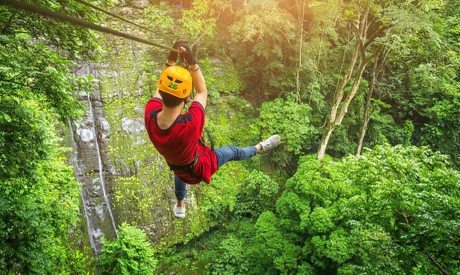

Adorning the northern hills of Kerala is the beautiful district of Wayanad, maintained by the District Tourism Promotion Council, Wayanad. This area is famous for its large amount of camping and trekking trails, breathtaking waterfalls, caves, bird-watching sites, flora, fauna and an overall plethora of magnificent sights. This area has been a tourist favourite over the years. People are especially delighted by the range of exotic products including spices, coffee, tea, bamboo products, honey and herbal plants available here. Kanthanpara Waterfalls is one hotspot in Wayanad that allures tourists from all over the world. Apart from these magnificent falls, Wayanad calls you to experience the stunning beauty of Karapuzha Dam, Pookode & Karlad Lake as well.